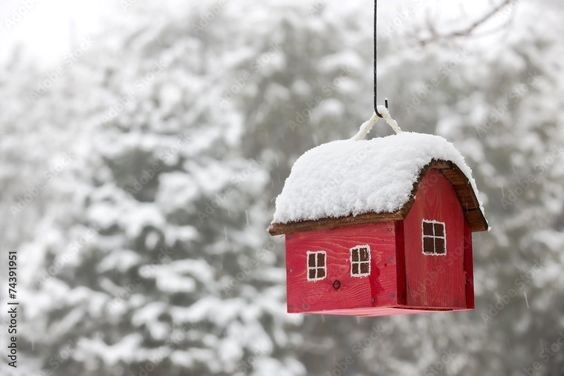

Con la llegada del invierno, mantener un hogar cálido y acogedor se convierte en una prioridad. ¿Qué tal si combinamos la calidez con la sustentabilidad y la armonía? El Feng Shui, antigua disciplina china que busca la armonía entre el entorno y las personas, ofrece valiosos consejos para crear un ambiente hogareño confortable durante la temporada invernal, a través de prácticas sostenibles.
El Feng Shui, que significa “viento y agua”, se basa en la creencia de que la energía (o chi) fluye a través de los espacios, y su correcta circulación influye en el bienestar de quienes los habitan. En este contexto, combinamos los principios del Feng Shui con prácticas sustentables para lograr un invierno armonioso y respetuoso con el medio ambiente.
Una de las recomendaciones clave es asegurar que las ventanas estén bien selladas. No solo se trata de evitar las corrientes de aire frío, sino también de ahorrar energía. Al sellar adecuadamente las ventanas con burletes o selladores, reducimos la pérdida de calor y disminuimos el consumo de calefacción, lo que se traduce en un menor impacto ambiental y un mayor ahorro en nuestras facturas. Además, el uso de cortinas gruesas o térmicas contribuye a mantener el calor dentro del hogar, mientras que añade un toque de elegancia y estilo a las habitaciones. Estas cortinas bloquean el frío y retienen el calor, optimizando el funcionamiento de los sistemas de calefacción y reduciendo el consumo de energía.
La distribución adecuada del mobiliario es otro aspecto clave. Evitar bloquear las salidas de calor de los radiadores o calefactores nos permite aprovechar al máximo la eficiencia de estos sistemas. Al optimizar la circulación del calor, creamos un ambiente más acogedor y evitamos el desperdicio de energía.
En busca de una calidez sostenible, el Feng Shui también nos invita a aprovechar la energía solar. Durante el día, abrir las cortinas y persianas permite que la luz solar natural caliente las habitaciones, reduciendo la necesidad de utilizar sistemas de calefacción. Esta práctica no solo nos conecta con la naturaleza, sino que también contribuye a la conservación de los recursos energéticos.
Asimismo, el uso de alfombras y tapetes ayuda a mantener el calor en el interior, aislando las superficies frías como el suelo de baldosas o madera. Esta simple adición brinda calidez física y añade una sensación de confort y armonía a los espacios. Decorar el hogar con tonos cálidos como rojos, naranjas, amarillos y granátes, por ejemplo, envolviendo las pantallas de las lámparas con telas de estos colores es otro gran tip.
Por último, para nutrir de energía la casa, recomendamos colocar plantas carnosas y flores frescas. Con el cambio de estación, así como cambian los pelajes de los animales y se revisten los árboles, también nuestra casa se prepara y renueva para recibir el invierno. Los principios del Feng Shui invitan a un orden en el entorno armónico con la naturaleza.